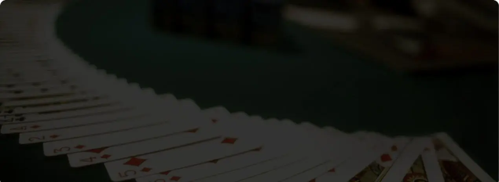
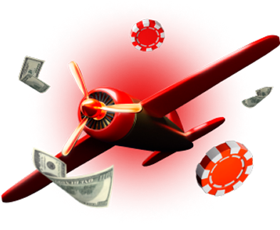
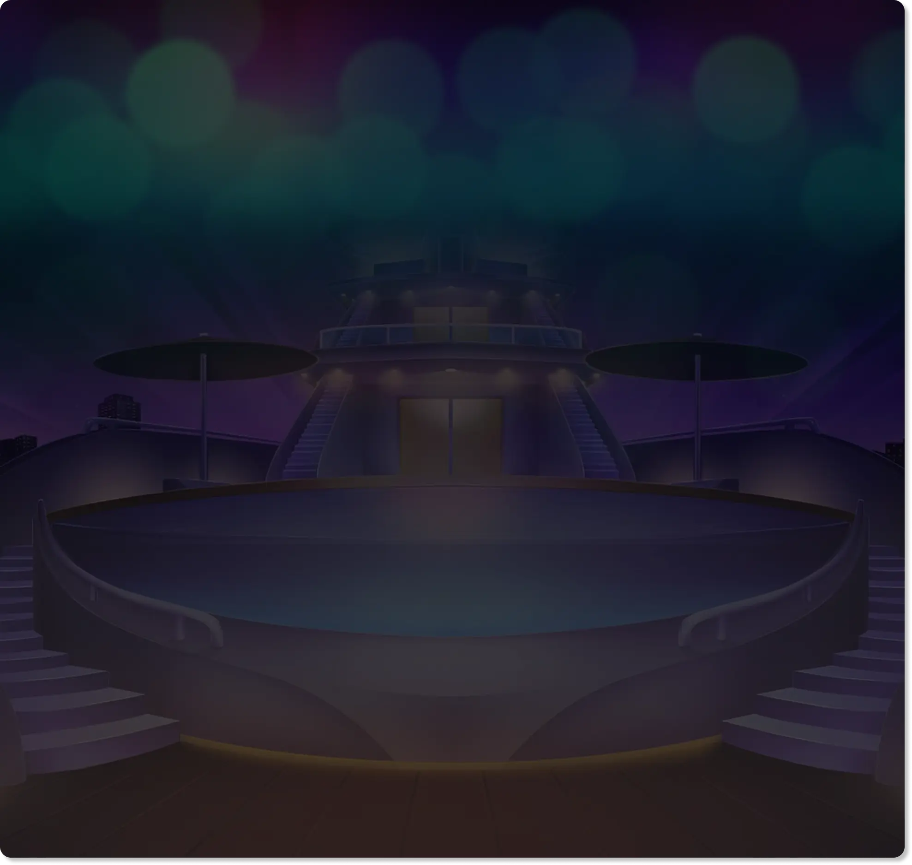
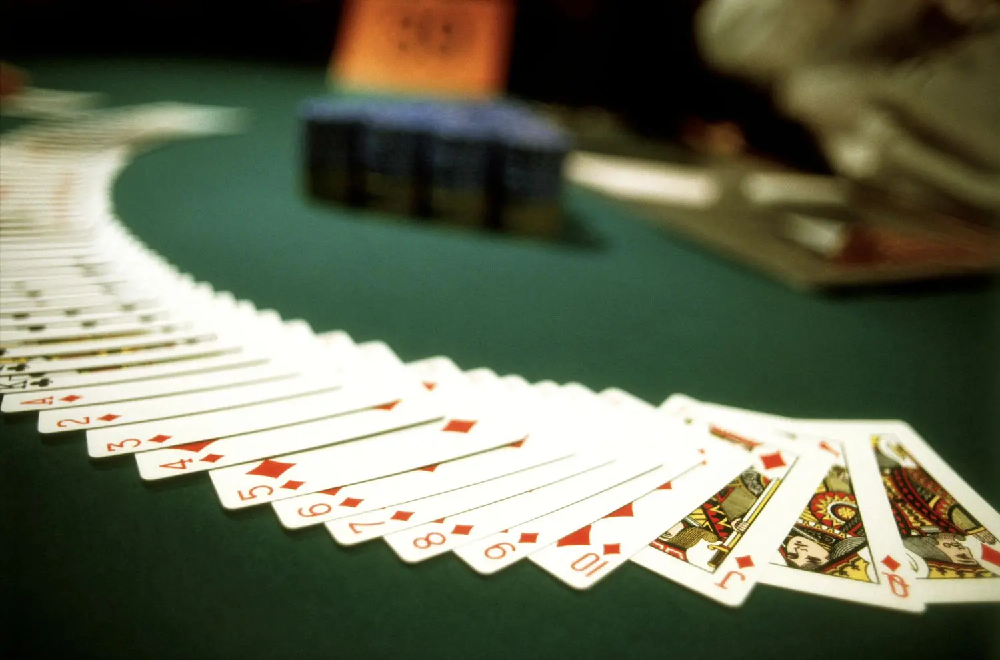
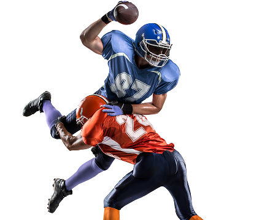
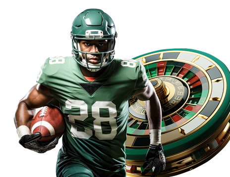
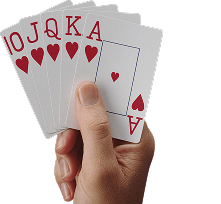

Betting on 22Bet Indonesia – Sports, Esports & Live
Learn how to bet on 22Bet from Indonesia: sports, esports, live betting, markets, loyalty rewards and the main risks explained in clear, simple language.
Join NowBetting on 22Bet: How It Really Works for Indonesian Players
On 22Bet, we spend a lot of time looking at numbers, rules, and real user experience, not just shiny welcome offers. 22Bet is one of those “all-in-one” offshore sites that keeps popping up when Indonesian players talk about betting – sportsbook, live betting, esports, virtuals, casino, the lot.
Before anything else, one hard truth: online gambling is illegal in Indonesia, and the government is not treating it lightly. Ministries and regulators have blocked millions of gambling pages and frozen tens of thousands of “gambling-linked” bank accounts in 2024–2025. If you decide to use offshore sites anyway, you’re doing it at your own legal and financial risk.
With that on the table, let’s talk about how 22Bet works in practice – what you actually see on the screen, how bets are built, and what kind of loyalty system sits behind it. This is for players who want to understand the mechanics, not chase miracles.

What 22Bet Is – and Who It’s For
22Bet launched in 2017 under TechSolutions Group N.V. and operates on an offshore licence from Curaçao; some regions are also linked to Kahnawake oversight. It’s a multi-product platform:
- Full sportsbook with pre-match and live betting
- Dedicated esports section
- Regular casino and live casino
- Virtual sports, 22Games, bingo and TV games
In most regions, everything runs from one wallet and one account. Who it realistically suits:/p>
- Casual bettors who like small stakes on big football nights, a bit of NBA, maybe some tennis
- Serious punters who want a wide menu of markets, live odds, and tools like cash out and quick bet
- Esports fans who actually follow Dota 2, CS2, League of Legends, Valorant, or FIFA simulations
If you only want one or two bets a year, 22Bet is overkill. If you like comparing lines, building accumulators, or mixing sports with casino in one place, it makes more sense.
Join NowSports and Esports Market Coverage
Before getting into odds and features, it helps to know what you can actually bet on. 22Bet covers a lot more than just European football – there are basketball lines, tennis, niche sports, plus a serious esports menu. This section breaks down the main sports, the types of bets you’ll see, and how esports fits in for anyone who prefers Dota, CS2, or FIFA simulations over traditional leagues.

Traditional Sports
The sports menu on 22Bet usually lists 20+ sports: football, basketball, tennis, volleyball, ice hockey, table tennis, handball, darts, cricket, and more.
A typical football day shows:
- Big European leagues: Premier League, La Liga, Serie A, Bundesliga
- Asian tournaments: AFC Champions League, J-League, K-League
- International cups: UEFA Champions League, national team qualifiers
Common football markets you’ll see:
| Market Type | What It Means in Simple Terms | Example |
|---|---|---|
| 1X2 | Home win, draw, or away win | Persija vs Persib – 1 / X / 2 |
| Double Chance | Two results combined (1X, 12, X2) | Take 1X if you trust home team |
| Totals (Over/Under) | Number of goals, sets, points above or below a line | Over 2.5 goals |
| Handicap | One side gets a head start +0.5, +1.5, etc | -1.5 on the favourite |
| Draw No Bet | If it’s a draw, stake is refunded | Home DNB |
Basketball, tennis, and other sports repeat the same basic logic: match winner, totals, handicaps, plus more detailed props (first team to 10 points, set scores, etc).
For Indonesian users who follow European football late at night, it’s common to see lines open days before kick-off and then move closer to match time as money comes in.

Esports
For a lot of younger Indonesian players, esports is more natural than traditional sports. You might not sit through a full 90 minutes of Liga 1, but you’ll happily watch a BO3 Dota 2 series or CS2 Major until 3 a.m. 22Bet leans into that – esports is not hidden under “Other”, it has its own section with full match lists, live odds, and in some cases streams.
When you tap into Esports, you’ll usually see rows of games and tournaments, for example:
- Dota 2 – regional leagues, qualifiers, and big events like The International cycle
- Counter-Strike 2 (CS2) – Major qualifiers, ESL, regional cups
- League of Legends – LEC, LCS, LCK, LPL, Worlds
- Valorant – VCT events and smaller regional tournaments
- FIFA / eFootball – both player-vs-player and AI-vs-AI sims
- NBA 2K and other sports sims – for people who prefer virtual basketball or football
Mobile titles like MLBB, Free Fire, PUBG Mobile are what most Indonesian fans actually play and watch day to day; those are usually covered more by local tournament platforms than by big international books like 22Bet. Here, the focus is on PC and console titles where there’s a clear match schedule and stable rules.
On a typical Dota 2 or CS2 match, you’ll see:
- Match winner (BO1, BO3, BO5)
- Map handicaps (e.g. -1.5 maps on the favourite in a BO3)
- Map totals (Over/Under 2.5 maps in a BO3)
- Correct map score (2–0, 2–1, etc)
- Race to X kills or X rounds
- Sometimes props like “first blood”, “first tower”, “pistol round winner”
Example: BO3 Dota 2 series at 20:00 WIB
- G2 iG 1.65
- Opponent 2.20
- Over 2.5 maps at 2.05, Under 2.5 at 1.70
If you’re used to watching Indonesian Dota or SEA region games on YouTube or Twitch, the experience is similar – you just have odds sitting next to the match list instead of chat spam and meme comments.
For FIFA / eFootball and other sports sims, a lot of the content runs as AI-vs-AI simulations:
- Matches are short (often 12–15 in-game minutes)
- They run basically around the clock, which means at 02:00 WIB or 11:00 WIB there is almost always something live
- Lines move very fast – a goal in the 4th minute can completely flip 1X2, totals, and next-goal odds
For someone in Indonesia, that “always live” feeling can be both fun and dangerous. It’s easy to say “just one more game” because the next match starts in a couple of minutes, and there is no natural break like “full round finished, I’ll stop here”.
If you like esports:
- Stick to titles you actually follow (Dota, CS2, Valorant, LoL), not random sims
- Decide your budget for the evening before you open the live tab
- Treat big events (Majors, TI, Worlds) as “special occasions” rather than an excuse to double stakes

Niche and Specialty Games
Beyond the standard sports and big-name esports, 22Bet has a side menu of niche and specialty options – the kind of stuff you click when you’re bored, not when you’ve studied form for a week.
You’ll sometimes see:
- Less mainstream sports like kabaddi, squash, floorball, bandy – things you’ll never see on Indonesian free TV, but they show up when big European or Indian tournaments are on.
- Virtual competitions:
- Virtual football – quick matches with fixed schedules (for example, a new “game” every few minutes)
- Virtual horse and dog racing – 24/7 races with random outcomes
- Virtual tennis, basketball, and other instant-result formats
- Short specials like:
- Penalty shootout bets (who wins, how many penalties scored)
- eStreetball style games – short quarters, quick scoring
- One-off “instant” markets that settle in a couple of minutes
For an Indonesian player used to watching real football or esports streams, these feel more like mini-games than actual sports:
- Results are fast, so you get constant “hit or miss” feedback
- It’s easy to fall into a cycle of chasing the last result because the next event is starting in 30–60 seconds
If you’re serious about your bankroll, it makes more sense to treat these as side entertainment:
- Maybe a few small-stake bets now and then,
- But focus your main volume on sports and esports you understand – European football, NBA, Dota 2, CS2, LoL, etc.
That’s where you can at least build some logic – form, line-ups, patch changes, meta – instead of pure reaction to random short simulations.
Join Now
Live Betting and Streaming Experience
If you mostly bet from Indonesia, live betting is probably where you end up first. Premier League at 02:00 WIB, Champions League at 03:00, NBA mornings, Dota 2 from SEA and Europe all day – 22Bet stacks all of that under one Live tab.
On a random night you’ll usually see:
- European football: Premier League, La Liga, Serie A, Champions League
- Asian leagues and cup
- NBA, EuroLeague and sometimes NBL/other leagues
- Tennis from ATP, WTA, Challenger
- A long list of live esports: CS2, Dota 2, League of Legends, Valorant, FIFA / eFootball sims
You can hit the main Live tab, or choose a sport first and then tap the smaller Live filter inside that sport to hide pre-match lines.

What a live match screen looks like
When you open a live event – for example Liverpool vs Arsenal or a Dota 2 BO3 – the layout is always similar so you don’t have to think.
Game Clock / Phase of Play
You get a clear indicator of where the game is:
- Football: “34’ 1st half”, “75’ 2nd half”, or “HT”
- Basketball: “Q3 08:12”
- Tennis: “Set 2, 4–3 (deuce)”
- Esports: “Map 2”, round number, or game timer
This matters if you’re doing things like late goals, over/under corners, or “comeback” bets. A 0–0 at 15’ and a 0–0 at 80’ are two totally different matches, even if the score looks the same.

Score and Basic Stats
Under or beside the clock you see:
- Current core
- In football: yellow/red cards, corners, maybe penalties won
- In tennis: who is serving, set score, game score
- In esports: kills, map score, round count, objective status (towers, barracks, bomb plants, etc.)
For an Indonesian bettor watching on TV or stream, this is a good backup when your stream lags. You can see the numbers move on the site before you actually see the goal on TV.
Live Odds That Won’t Sit Still
Right next to that info you get the main markets:
- 1X2 (home / draw / away)
- Double chance
- Totals (goals, points, rounds)
- Handicaps
- Next goal, next point, next round
The odds jump whenever something important happens: a goal, red card, break of serve, big team fight in Dota, pistol round in CS2. You’ll often see prices flashing or briefly highlighted when they change.

Extra Markets Under “+Xxx”
Below the main line there’s a button like “+178” or “+245”. That’s how many extra markets sit behind that match. Inside you’ll find:
- Correct core
- Team to win both halves
- Exact total goals (for example “exactly 2” or “3–4 goals”)
- Player props (goals, cards, points, assists – depends on the league)
- More detailed esports stuff like map handicaps, total kills, specific round bets

For someone in WIB time who’s watching late European matches or SEA Dota, this means you can go very specific if you want. Fancy 1–0 to stay as it is? Correct score. Expect chaos in the last 10 minutes? Over 1.5 goals from 80’. Think a Dota team snowballs after first Roshan? You’ll find total kills or map-winner lines right there.
The risk, of course, is that with so many options and constantly moving numbers, it’s very easy to keep clicking “just one more” bet. So the interface is helpful for information… and extremely dangerous if you’re tired, tilted, or betting at 2–3 in the morning on autopilot.

Streaming, Trackers, and How They Sit Next to the Odds
For bigger football matches, top basketball games, and a lot of esports, 22Bet adds a visual layer to the live odds:
- Embedded live streams where rights allow – most often on esports and some smaller competitions.
- Animated match trackers for football and other sports when video is not available. You see a 2D pitch or court with possession, attacks, dangerous attacks, and key moments moving in real time.
The layout is designed so you can:
- Watch the stream or tracker in the top centre of the screen, and
- See main markets (match winner, totals, handicaps) right beside or under the video/graphic.
You don’t have to switch windows – you click the odds, they jump into the betslip on the right, and you confirm the stake from there. On mobile it’s the same idea, just stacked: stream or tracker at the top, odds right below, betslip sliding up from the bottom.
A typical example:
- You’re watching Real Madrid vs Barcelona with a tracker showing Madrid pressing high in the last 10 minutes.
- You see “Next Goal – Real Madrid” or “Real Madrid to score Over 0.5” flashing at updated odds.
- One tap adds it to the slip, another tap confirms, all while you’re still looking at the same screen.
In esports it’s similar. On a Dota 2 game you might see:
- Map score (1–1 in a BO3)
- Current kills (18–12), tower status, Roshan status
- Live markets like “Winner of this map”, “Total kills Over/Under 44.5”, “First to 25 kills”
Again, odds sit right next to that panel, so reacting to a big team fight becomes a one- or two-tap decision.
Why Live Betting Feels So Intense
This “watch and bet in one place” design is great if you’re disciplined and know what you’re looking for: you can use what you see to make a decision, compare lines, and time your entries.
It’s also where things get dangerous:
- Odds jump constantly – a red card, a kill streak, or a late corner flurry can flip lines in seconds.
- Quick Bet / one-tap staking (if you turn it on) lets you fire money into the market with zero extra checks.
- The combination of movement on the screen, changing numbers, and a big green “Place bet” button is built to push you into fast, emotional decisions rather than slow, rational ones.
If you know you’re impulsive, live markets should be the first place you limit:
- Turn off Quick Bet so there’s always a confirm screen.
- Set a cap for total live stakes per match and walk away when you hit it – even if the game isn’t over.
- Avoid chasing a loss with “one more in-play bet” just because the stream is still on.
Used carefully, live betting at 22Bet is a fun extra layer on top of watching a game; used on tilt, it’s the fastest way to burn through a balance.
Betslip and Wagering Features
Everything you click eventually ends up in one place: the betslip. If that part is confusing, the whole site feels messy. This section walks through how the betslip on 22Bet actually behaves – singles, combos, systems – plus tools like Quick Bet, cash out, and odds formats. The idea is to make sure you know exactly what you’re staking and what has to happen for your ticket to win.
Betslip Interface
The betslip sits on the right-hand side on desktop and usually as a slide-in panel on mobile. It fills automatically as you tap odds.
You can build:
- Singles – one outcome, one result
- Combos / Accas – several selections across matches and sports, with multiplied odds
- System bets – multiple combinations where not every leg has to win
A simple combo example:
| Selection | Odds |
|---|---|
| Manchester City to win | 1.50 |
| Over 2.5 goals in another game | 1.90 |
| Big NBA favourite on moneyline | 1.30 |
Total combo odds = 1.50 × 1.90 × 1.30 ≈ 3.705
Stake 100,000 IDR → potential return around 370,500 IDR (before any tax or currency conversion). Lose one leg and the entire accumulator usually loses.
Quick Bet
Most modern 22Bet versions offer Quick Bet or one-tap staking:
- You set a default stake (for example 20,000 IDR) in the settings.
- When Quick Bet is on, tapping odds instantly places the bet for that amount.
- No extra confirmation screen, which is handy for fast live odds but dangerous if you tap the wrong side.
This is ideal for people who know exactly what they want and are watching the game in real time. If you’re still learning, leaving Quick Bet off is usually safer.
Customisation & Flexibility
Some of the small but useful tweaks:
- Odds formats – you can switch between decimal (1.85), fractional, or American style in the account settings.
- Cash Out / Sell Bet Slip – on many markets you can take a partial win or cut your loss before the match ends.
- Edit Bet (in some regions) – adjust an open combo by adding or removing legs.
- Clear split between Open bets, Settled bets, and Bet history in your account.
These tools are “quality of life” features – they don’t change the house edge, but they give more control over how you manage risk during a game.

Loyalty Programme and Player Status System
22Bet runs two overlapping reward ideas:
- A classic VIP cashback ladder with levels like Copper, Bronze, Silver, Gold, Ruby, Sapphire, Diamond, and VIP status.
- 2 A general rebate on weekly sports stakes (0.3% in many regions) separate from VIP.
Some local mirrors and white-labels also use “gamified” status names like Wood, Paper, Rock, Scissors, Iron, Bronze, Silver, but the core idea is always the same: more turnover = more small returns.
Status Levels – How Progress Is Measured
On most current VIP charts:
- You start at a base level when you join.
- Every real-money bet earns experience points / loyalty points, regardless of whether the bet wins.
- As your rolling monthly turnover grows, you move up through the levels.
A simplified example of how status can be calculated (numbers for illustration only; actual requirements are in the 22Bet VIP rules):
| VIP Level | Monthly Turnover Range (example) | Typical Cashback Range* |
|---|---|---|
| Copper | Starting level | 3% |
| Bronze | Medium turnover | 4–5% |
| Silver | Higher stakes or volume | 6–7% |
| Gold/Ruby | Very active players | 8–10% |
| Diamond | Top regulars | Up to 11% |
| VIP | Invite-only, tailored rate | 0.05–0.25% per bet |
*These percentages come from recent third-party reviews of 22Bet’s VIP system, not Indonesian law or banks.
The key point: status is tied to how much you bet, not how often you win. High turns with small, steady bets can push you upward over time.
Join NowPerks and Rewards
What you usually get as you climb:
- Higher cashback percentages on casino or sports action
- More frequent or personalised bonus offers
- Occasional priority in support or withdrawals
For a casual Indonesian bettor (say 50,000–100,000 IDR stakes on weekends), VIP is a nice background extra, not something worth chasing. For high-volume players, it becomes a way to claw back part of the house edge.
Join NowHow Rebate Mechanics Work – Simple Example
Separate from VIP, 22Bet advertises a weekly sports rebate, often 0.3% of total stakes across all your sports bets.
Example
- Over a week you place 10,000,000 IDR in total sports bets.
- The rebate percentage is 0.3%.
- Your weekly rebate ≈ 30,000 IDR back as bonus or real funds, depending on regional rules.
That’s not life-changing, but combined with ongoing VIP cashback on casino play, it nudges the effective house edge down. Just remember: you’re still wagering a lot more than you’re getting back.
Join NowA Note on Indonesian Reality
We can’t skip this part. Between late 2024 and 2025, Indonesian authorities have:
- Blocked millions of gambling pages and related content
- Frozen tens of thousands of bank accounts linked to online casinos and betting activity
- Publicly warned that online gambling is draining household finances and undermining social stability
Using sites like 22Bet from inside Indonesia is not just “against the rules”; it can cause real financial and legal trouble, especially if you’re using local bank accounts or e-wallets.
If you still choose to read betting guides and play offshore:
- Treat it as entertainment only, not a financial plan.
- Avoid using money needed for rent, food, or family.
- Use any available limits, self-exclusion, or blocking tools if you feel things are getting out of control.

Final Thoughts
22Bet gives Indonesian users a lot in one place: a big sportsbook, serious esports coverage, constant live action, and a layered cashback / VIP system. The interface is familiar, the odds are competitive, and the tools – cash out, quick bet, multi-markets – are the kind of things regulars genuinely use.
But the bigger picture matters:
- Legally, Indonesia is in “total war” mode against online gambling.
- Mathematically, even with VIP and rebates, the house keeps the edge.
- Psychologically, live and esports markets can be very fast and very addictive.